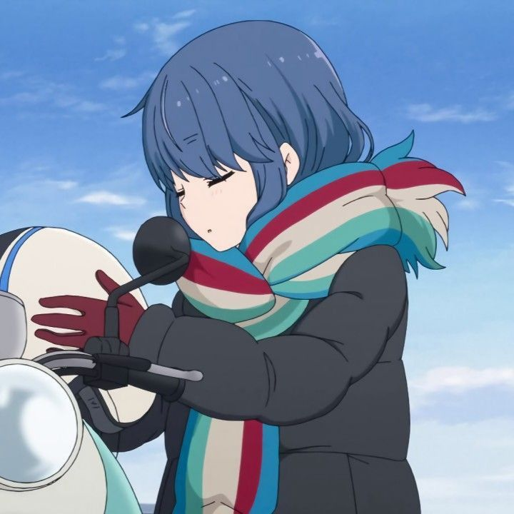
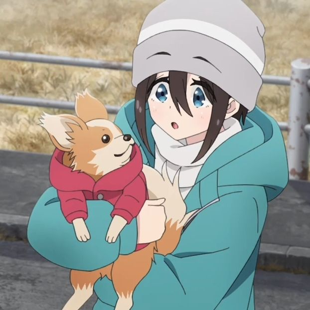

⛺ 故事簡介
喜歡在淡季進行單人露營的女高中生「志摩凜」，在一次於本栖湖的露營中，遇見為了看富士山而騎腳踏車來到這裡的「各務原撫子」。
從兩人的相遇到野活組成立。本作透過輕鬆療癒的步調，描繪了少女們在山梨、靜岡、長野與愛知等地的露營生活，以及被美食與景色療癒的時刻。
📚 全系列作品一覽
| 漫畫(原作) | 由日本漫畫家 あfろ 創作，以山梨縣以及富士山周邊一帶作舞台，描述露營中的知識、野炊等戶外活動，2015年開始連載至今。台灣由東立出版社代理發行。 |
|---|---|
| 動畫 Season1 | 2018年1月播出。由 C-Station 製作。凜與撫子在本栖湖相遇，由此開始的戶外系 Girls Story。 |
| 動畫 房間露營△ (番外篇) | 2020年1月播出。每集約3分鐘的短篇動畫，主要描寫野活組的有趣日常。 |
| 動畫 Season2 | 2021年1月播出。同為 C-Station 製作。劇情繼續深入，描寫了新年露營以及前往伊豆的團體旅行。 |
| 電影版 搖曳露營△ | 2022年7月上映。原創劇情，長大的五人重新集結，親手打造露營場的故事。 |
| 動畫 Season3 | 2024年4月播出。改為 8bit 製作，繼續在山梨和靜岡等地享受各自的戶外活動。 |
| 真人電視劇 | 2020年播出。因高度還原原作場景、美食與露營器材而廣受好評。 |
👥 野外活動社與其他夥伴
各務原 撫子 (Kagamihara Nadeshiko)
#吃貨 #體能怪物 #野活組
從靜岡搬到山梨的高中生。
性格天真，擁有無底洞般的胃口，因為遇見凜而踏入露營的世界。

志摩 凜 (Shima Rin)
#單人露營 #機車 #圖書委員
熱愛淡季單人露營的實力派。
喜歡獨處，但在認識撫子後，逐漸體會到與朋友一同露營的樂趣。
大垣 千明 (Ogaki Chiaki)
#社長 #平價露營 #野活組
野外活動社的社長。
性格豪爽，經常會有各種鬼點子，是團隊中的氣氛製造者。
犬山 葵 (Inuyama Aoi)
#關西腔 #吹牛 #野活組
千明的好友。
性格穩重，但偶爾會一本正經地說謊來捉弄撫子，說話帶有關西口音。

齊藤 惠那 (Saito Ena)
#吉娃娃 #富婆 #回家社
凜的朋友、回家社社員。
養了一隻叫做「竹輪」的吉娃娃，會給自己和竹輪買非常昂貴的裝備。
土岐 綾乃 (Toki Ayano)
#青梅竹馬 #機車
撫子住在濱松的兒時玩伴。
性格有些慵懶，和凜一樣喜歡騎摩托車，兩人意外地很合。
「歡迎來到野外活動社！」